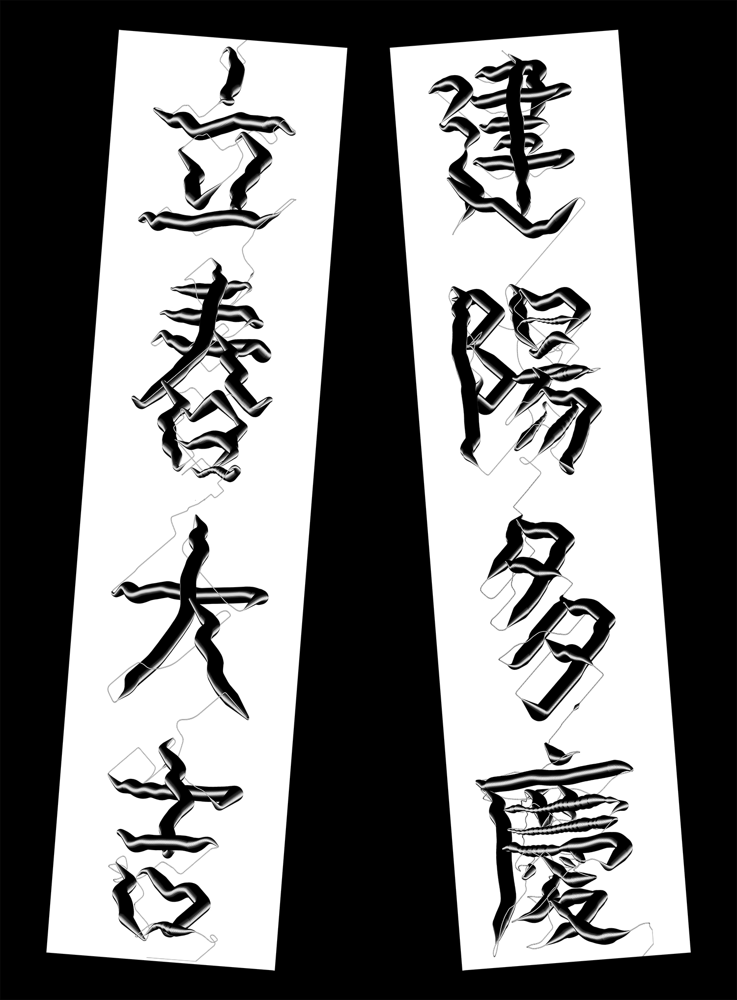

Dabin Kim 多彬 – Typography ↔ Print + Digital ––– Dabin Kim 多彬 – Typography ↔ Print + Digital ––– Dabin Kim 多彬 – Typography ↔ Print + Digital ––– Dabin Kim 多彬 – Typography ↔ Print + Digital –––
Dabin Kim Print Web Info
•••••••••••••••••••••••••••••••••••••••••••••••••••••••••••••••••••••••
Dabin Kim is Typography Apprentice. Tries to explore the boundary of visual language, work in and out between digital and tangible surface. Studying Visual Communication Design at Hongik University, Korea.
Email → dabinkiim@gmail.com Visit → Instagram • Tumblr • Github
Small Practices → Typography _ , Coding _
Press ⌕ to unfold the screen.
Website designed and developed by Dabin Kim.
All of my web are also archived at EveryMonday

Gravity x Pressure Calligraphy, 2021.
The finger becomes a brush, the pressure serves as ink, and the screen represents the paper. During the stroke, every movement of the body is recorded as data of both gravity and pressure, causing a reaction remaining in the form of letters.
Try writing it yourself (only mobile).
Counting Sheep, 2020.
Created a website that automatically counts sheep until I go to bed using javascript.
Enjoy counting your infinitely multiplying sheep.


Widow-workshop, workshop programming, web and poster, 2020.

Scratch, 2020.
Mouse interaction website. Scratch screen just like a cat.
•••••••••••••••••••••••••••••••••••••••••••••••••••••••••••••••••••••••
©2021 Dabin Kim